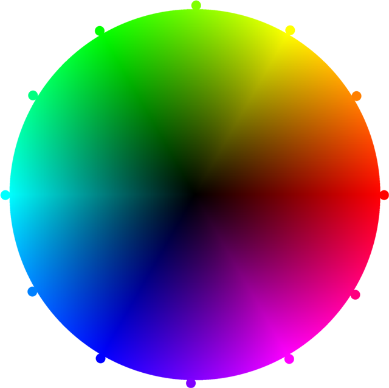

Create a 2D Sine Wave
|
All Added Sines |
FFT of ResultDC: Display: When checked, the image shows the natural log of the magnitude of the complex value plus 1 which can greatly help see all of the detail. Otherwise, no natural log or plus 1. The DC component is always clipped to the second-max. The color is derived from the phase as follows (with positive real to the right and positive imaginary on the top):  You are hovering over:
And it has a value of:
It (approximately) looks like:
|